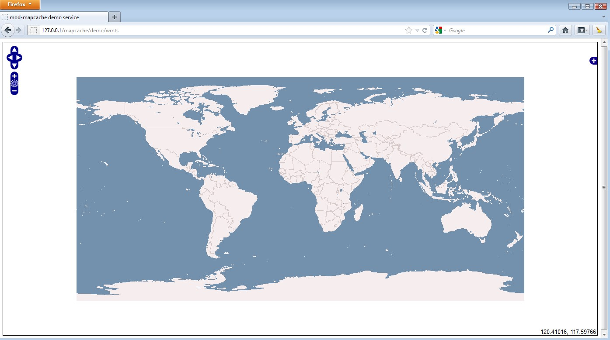
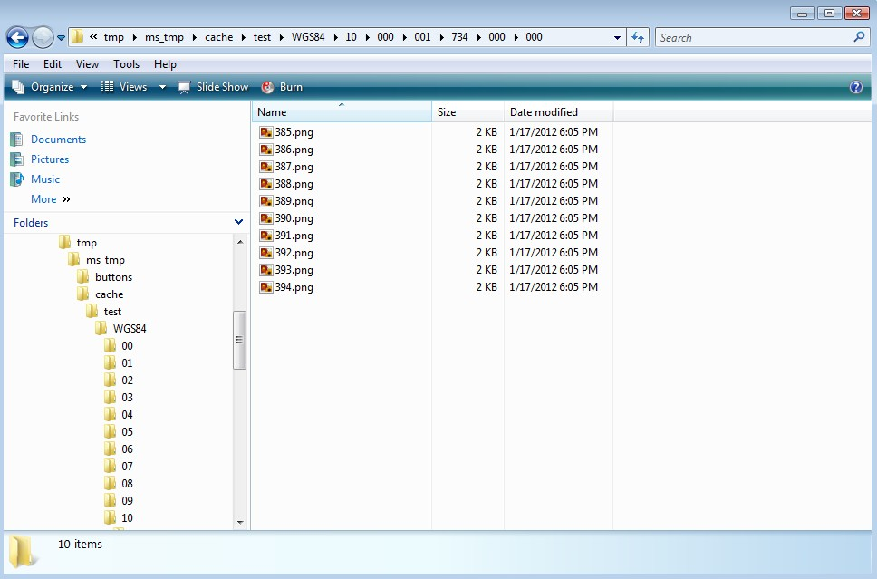

Compilation & Installation¶
- Author:
Thomas Bonfort
- Contact:
tbonfort at terriscope.fr
- Author:
Alan Boudreault
- Contact:
aboudreaut at magears.com
- Author:
Jeff McKenna
- Contact:
jmckenna at gatewaygeomatics.com
- Author:
Mathieu Coudert
- Contact:
mathieu.coudert at gmail.com
- Author:
Seth Girvin
- Contact:
sgirvin at compass.ie
- Last Updated:
2026-04-20
Getting the Source¶
The MapCache project is located at https://github.com/MapServer/mapcache, and can be checked out with either:
# readonly
git clone https://github.com/MapServer/mapcache.git
# ssh authenticated
git clone git@github.com:MapServer/mapcache.git
# tarball
wget https://github.com/MapServer/mapcache/zipball/main
Linux Instructions¶
These instructions target a Debian/Ubuntu setup, but should apply with few modifications to any Linux installation.
MapCache requires a number of library headers in order to compile correctly:
apache / apr / apr-util / apx2: these are included in the apache2-prefork-dev or apache2-threaded-dev packages, depending on which Apache MPM you are running. This package will pull in the necessary APR headers that you would have to manually install if you are not building an Apache module (libaprutil1-dev and libapr1-dev)
png: libpng12-dev
jpeg: libjpeg62-dev
curl: libcurl4-gnutls-dev
The following libraries are not required, but recommended:
pcre: libpcre3-dev. This will give you more powerful regular expression syntax when creating validation expressions for dimensions
pixman: libpixman-1-dev. The pixel manipulation library is used for scaling and alpha-compositing images. MapCache ships with some code to perform these tasks, but Pixman is generally faster as it includes code optimized for modern CPUs (SSE2, MMX, etc…)
The following libraries are not required, but needed to enable additional functionalities:
fcgi: libfcgi-dev. Needed to build a FastCGI program if you don’t want to run MapCache as an Apache module
gdal / geos: libgdal1-dev libgeos-dev. Needed to enable advanced seeding options (for only seeding tiles that intersect a given geographical feature)
sqlite: libsqlite3-dev. For enabling the SQLite backend storage
tiff: libtiff4-dev. For enabling the TIFF backend storage
berkeley db libdb4.8-dev : For enabling the Berkeley DB backend storage
lmdb liblmdb-dev : For enabling the Lightning Memory-Mapped Database backend storage (available since MapCache 1.14.0 release)
Note
MapCache now builds with CMake.
For Unix users installing all packages to the default locations, the compilation process should continue with:
$ cd mapcache
$ mkdir build
$ cd build
$ cmake ..
$ # follow instructions below if missing a dependency
$ make
$ sudo make install
Note
If you receive a CMake error such as “Could NOT find APACHE (missing: APACHE_INCLUDE_DIR)”, CMake needs to locate the httpd.h header file, and apxs or apxs2 executables, so you may need to install those specific packages (such as on Ubuntu with the command apt-get install apache2-dev) and re-run the cmake command.
Apache Module Specific Instructions¶
The make install above installs the Apache module, but if you specifically need to install only the Apache module you can do the following:
$ sudo make install-module
$ sudo ldconfig
The installation script takes care of putting the built module in the Apache module directory. The process for activating a module is usually distro specific, but can be resumed by the following snippet that should be present in the Apache configuration file ( e.g. /usr/local/httpd/conf/httpd.conf or /etc/apache2/sites-available/default ):
LoadModule mapcache_module modules/mod_mapcache.so
Next, a MapCache configuration is mapped to the server URL with the following snippet:
For Apache < 2.4:
<IfModule mapcache_module>
<Directory /path/to/directory>
Order Allow,Deny
Allow from all
</Directory>
MapCacheAlias /mapcache "/path/to/directory/mapcache.xml"
</IfModule>
For Apache >= 2.4:
<IfModule mapcache_module>
<Directory /path/to/directory>
Require all granted
</Directory>
MapCacheAlias /mapcache "/path/to/directory/mapcache.xml"
</IfModule>
Before you restart, copy the example mapcache.xml file to the location specified in your Apache configuration:
$ cp mapcache.xml /path/to/directory/mapcache.xml
Finally, restart Apache to take the modified configuration into account
$ sudo apachectl restart
If you have not disabled the demo service, you should now have access to it on http://myserver/mapcache/demo
nginx Specific Instructions¶
Warning
Working with nginx is still somewhat experimental. The following workflow has only been tested on the development version, i.e. nginx-1.1.x
For nginx support you need to build MapCache’s nginx module against the nginx source. Download the nginx source code:
$ cd /usr/local/src
$ mkdir nginx
$ cd nginx
$ wget http://nginx.org/download/nginx-1.1.19.tar.gz
$ tar -xzvf nginx-1.1.19.tar.gz
$ cd nginx-1.1.19/
Run the configure command with the flag –add-module. This flag must point to MapCache’s nginx child directory. Assuming that the MapServer source was cloned or extracted into to /usr/local/src, an example configure command for nginx would look like this:
$ ./configure --add-module=/usr/local/src/mapcache/nginx
Then build nginx:
$ make
$ sudo make install
Due to nginx’s non-blocking architecture, the MapCache nginx module does not perform any operations that may lead to a worker process being blocked by a long computation (i.e.: requesting a (meta)tile to be rendered if not in the cache, proxying a request to an upstream WMS server, or waiting for a tile to be rendered by another worker): It will instead issue a 404 error. This behavior is essential so as not to occupy all nginx worker threads, thereby preventing it from responding to all other incoming requests. While this isn’t an issue for completely seeded tilesets, it implies that these kinds of requests need to be proxied to another MapCache instance that does not suffer from these starvation issues (i.e. either a FastCGI MapCache, or an internal proxied Apache server). In this scenario, both the nginx MapCache instance and the Apache/FastCGI MapCache instance should be running with the same mapcache.xml configuration file.
MapCache supplies an nginx.conf in its nginx child directory. The conf contains an example configuration to load MapCache. The most relevant part of the configuration is the location directive that points the ^/mapcache URI to the mapcache.xml path. You will need to change this path to point to your own mapcache.xml in the MapCache source.
The basic configuration without any proxying (which will return 404 errors on unseeded tile requests) is:
location ~ ^/mapcache(?<path_info>/.*|$) {
set $url_prefix "/mapcache";
mapcache /usr/local/src/mapcache/mapcache.xml;
}
If proxying unseeded tile requests to a MapCache instance running on an Apache server, we will proxy all 404 MapCache errors to a mapcache.apache.tld server listening on port 8080, configured to respond to MapCache requests on the /mapcache location.
location ~ ^/mapcache(?<path_info>/.*|$) {
set $url_prefix "/mapcache";
mapcache /usr/local/src/mapcache/mapcache.xml;
error_page 404 = @apache_mapcache;
}
location @apache_mapcache {
proxy_pass http://mapcache.apache.tld:8080;
}
If using FastCGI instances of MapCache, spawned with e.g. spawn-fcgi or supervisord on port 9001 (make sure to enable FastCGI when building MapCache, and to set the MAPCACHE_CONFIG_FILE environment variable before spawning):
location ~ ^/mapcache(?<path_info>/.*|$) {
set $url_prefix "/mapcache";
mapcache /usr/local/src/mapcache/mapcache.xml;
error_page 404 = @fastcgi_mapcache;
}
location @fastcgi_mapcache {
fastcgi_pass localhost:9001;
fastcgi_param QUERY_STRING $query_string;
fastcgi_param REQUEST_METHOD $request_method;
fastcgi_param CONTENT_TYPE $content_type;
fastcgi_param CONTENT_LENGTH $content_length;
fastcgi_param PATH_INFO $path_info;
fastcgi_param SERVER_NAME $server_name;
fastcgi_param SERVER_PORT $server_port;
fastcgi_param SCRIPT_NAME "/mapcache";
}
Copy the relevant sections of nginx.conf from MapCache’s nginx directory into nginx’s conf file (in this case /usr/local/nginx/conf/nginx.conf). You should now have access to the demo at http://myserver/mapcache/demo
CGI/FastCGI Specific Instructions¶
A binary CGI/FastCGI is located in the mapcache/ subfolder, and is named “mapcache”. Activating FastCGI for the MapCache program on your web server is not part of these instructions; more details may be found on the FastCGI page or on more general pages across the web.
The MapCache FastCGI program looks for its configuration file in the environment variable called MAPCACHE_CONFIG_FILE, which must be set by the web server before spawning the MapCache processes.
See also
Apache with mod_cgi¶
SetEnv "MAPCACHE_CONFIG_FILE" "/path/to/mapcache/mapcache.xml"
For Apache with mod_fcgid:
FcgidInitialEnv "MAPCACHE_CONFIG_FILE" "/path/to/mapcache/mapcache.xml
If you have not disabled the demo service, you should now have access to it on http://myserver/fcgi-bin/mapcache/demo, assuming your fcgi processes are accessed under the fcgi-bin alias.
With a working mod_fcgid Apache instance, the full httpd.conf snippet to activate MapCache could be:
<IfModule mod_fcgid.c>
IPCCommTimeout 120
MaxProcessCount 10
FcgidInitialEnv "MAPCACHE_CONFIG_FILE" "/path/to/mapcache/mapcache.xml"
<Location /map.fcgi>
Order Allow,Deny
Allow from all
SetHandler fcgid-script
</Location>
ScriptAlias /map.fcgi "/path/to/mapcache/src/mapcache"
</IfModule>
The MapCache service would then be accessible at http://myserver/map.fcgi[/demo]
IIS and FastCGI¶
First ensure FastCGI has been installed - see the notes on configuring MapServer in IIS.
MapCache relies on the MAPCACHE_CONFIG_FILE environment variable to be set in IIS. See the MapServer
further configuration on how to set this.
To create the variable from the command line you can use the following (which requires administrator privileges):
%windir%\system32\inetsrv\appcmd.exe set config -section:system.webServer/fastCgi /+"[fullPath='C:\Mapserver\bin\mapcache.fcgi.exe'].environmentVariables.[name='MAPCACHE_CONFIG_FILE',value='C:\MapServer\apps\cache1.xml']" /commit:apphost
Often you will want to use different MapCache configuration files for different web applications on the same server. To set these
up you need to set a unique argument that will be passed to mapcache.fcgi.exe.
%windir%\system32\inetsrv\appcmd.exe set config -section:system.webServer/fastCgi /+"[fullPath='C:\Mapserver\bin\mapcache.fcgi.exe',arguments='cache2']" /commit:apphost
%windir%\system32\inetsrv\appcmd.exe set config -section:system.webServer/fastCgi /+"[fullPath='C:\Mapserver\bin\mapcache.fcgi.exe',arguments='cache2'].environmentVariables.[name='MAPCACHE_CONFIG_FILE',value='C:\MapServer\apps\cache2.xml']" /commit:apphost
Note
It appears the command has to be run in two parts or the following error is returned
ERROR ( message:Cannot find requested collection element. ).
FastCGI configurations are stored in C:\Windows\System32\inetsrv\config\applicationHost.config. The commands creates
the following XML:
<application fullPath="C:\Mapserver\bin\mapcache.fcgi.exe" arguments="cache2">
<environmentVariables>
<environmentVariable name="MAPCACHE_CONFIG_FILE" value="C:\MapServer\apps\cache2.xml" />
</environmentVariables>
</application>
Now we have set MAPCACHE_CONFIG_FILE we can configure a web application to use MapCache. This can all be done through the web application’s
web.config file. Below is a sample configuration:
<?xml version="1.0" encoding="UTF-8"?>
<configuration>
<system.webServer>
<handlers>
<add name="mapcache"
path="/*" verb="*" modules="FastCgiModule"
scriptProcessor="C:\MapServer\bin\mapcache.fcgi.exe|cache2"
resourceType="Unspecified"
requireAccess="Script"
allowPathInfo="true" />
</handlers>
</system.webServer>
</configuration>
Key points to note are:
allowPathInfomust be set totrueso IIS handles thePATH_INFOin the same way as other web servers (otherwise IIS duplicates theSCRIPT_NAMEinPATH_INFObreaking how MapCache handles URLs).scriptProcessorshould be set to match thefullPathset when creating the FastCGI configuration. The|cache2should match the argument for the FastCGI application, separated from the path with a pipe (|) character.If you have a FastCGI application without any arguments (when running a single instance of MapCache) you do not need to add the pipe and argument to
scriptProcessor.
The MapCache service should then be accessible at http://localhost/mapcache/demo/
Customizing the Build, Or If Something Went Wrong¶
Depending on which packages are available in the default locations of your system, the “cmake ..” step will most probably have failed with messages indicating missing dependencies (by default, MapCache has some of those). The error message that CMake prints out should give you a rather good idea of what steps you should take next, depending on whether the failed dependency is a feature you require in your build.
mod_mapcache requires Apache, libcurl, libjpeg and libpng development headers. The CMake script will try to locate them in default system locations, but these locations can be overridden or specified with -D switches. For example, if you get a message such as ‘Could NOT find APR ‘, you can use a command such as (assuming that APR is at /usr/local/apr) :
$ cmake -DCMAKE_PREFIX_PATH="/usr/local/apr;" ..
If you don’t want e.g. fcgi, you can disable the dependency by re-running CMake with -DWITH_DEPENDENCY=0, e.g.
$ cmake .. -DWITH_FCGI=0
Options Supported By the MapCache CMake Builder¶
Here is a list of supported options that can be enabled/disabled at build.
option(WITH_PIXMAN "Use Pixman for SSE optimized image manipulations" ON) option(WITH_SQLITE "Use SQLite as a cache backend" ON) option(WITH_BERKELEY_DB "Use Berkeley DB as a cache backend" OFF) option(WITH_LMDB "Use LMDB as a cache backend" OFF) option(WITH_MEMCACHE "Use memcache as a cache backend (requires recent apr-util)" OFF) option(WITH_TIFF "Use TIFFs as a cache backend" OFF) option(WITH_TIFF_WRITE_SUPPORT "Enable (experimental) support for writable TIFF cache backends" OFF) option(WITH_GEOTIFF "Allow GeoTIFF metadata creation for TIFF cache backends" OFF) option(WITH_PCRE "Use PCRE for regex tests" OFF) option(WITH_MAPSERVER "Enable (experimental) support for the MapServer library" OFF) option(WITH_POSTGRESQL "Use PostgreSQL as a dimension backend" OFF) option(WITH_RIAK "Use Riak as a cache backend" OFF) option(WITH_GDAL "Choose if GDAL raster support should be built in" ON) option(WITH_MAPCACHE_DETAIL "Build coverage analysis tool for SQLite caches" ON) option(WITH_GEOS "Choose whether GEOS geometry operations support should be built in" ON) option(WITH_OGR "Choose whether OGR/GDAL input vector support should be built in" ON) option(WITH_CGI "Choose whether CGI executable should be built" ON) option(WITH_FCGI "Choose whether CGI executable should support FastCGI" ON) option(WITH_VERSION_STRING "Show MapCache in server version string" ON) option(WITH_APACHE "Build Apache Module" ON)
Pixman (recommended, from 0.5 onwards)
-DWITH_PIXMAN=[0|1]Pixman is a pixel manipulation library used to assemble image tiles when responding to non-tiled WMS requests. Pixman support is recommended as it is highly optimized and will take advantage of recent processor extensions (MMX, SSE2, etc.) to speed up blending and resampling operations. If the Pixman library is not found, MapCache will fall back to internal pixel operations that are slower.
SQLite (optional, from 0.5 onwards)
-DWITH_SQLITE=[0|1]SQLite is used to enable the SQLite and MBTiles cache backend. Version 3.5.0 or newer is required.
GDAL (optional, from 0.4 onwards, also requires geos)
-DWITH_OGR=[0|1]GDAL (actually OGR) is used by the seeding utility to allow the seeding of tiles only intersecting a given polygon, e.g. to pre-seed all the tiles of a given country.
GEOS (optional, from 0.5 onwards)
-DWITH_GEOS=[0|1]Along with GDAL/OGR, GEOS is needed by the seeder to test for the intersection of tiles with geographical features. A sufficiently recent version of GEOS (with support for prepared geometries) is required (but not enforced by the configure script, so you’ll end up with compilation errors if a too old GEOS version is used).
PCRE (optional)
-DWITH_PCRE=[0|1]PCRE (Perl Compatible Regular Expressions) can be used instead of POSIX regular expressions for validating WMS dimensions. They are more powerful than POSIX REs (and might be slower). You don’t need this if you aren’t planning on using WMS dimension support with regex validation, or if your validation needs are covered by posix REs.
See also
FastCGI Support (optional)
-DWITH_FCGI=[0|1]MapCache can run as a FastCGI executable. Note that the overhead of FastCGI is non-negligible with respect to the throughput you may obtain with a native Apache module. The FastCGI build is less tested, and may lag behind the Apache module version on some minor details. YMMV.
TIFF read/write Cache Support (optional)
Use TIFFs as a cache backend (READONLY) :
-DWITH_TIFF=[0|1]TIFF write support (for creating new TIFF files and adding tiles to existing TIFF files) is still experimental and disabled by default. There is a risk of ending up with corrupt TIFF files if they are placed on a filesystem that does not honor file locking, as in that case multiple processes might end up writing to the same file. File locking across concurrent threads is also problematic, although MapCache tries to detect this situation and apply sufficient locking workarounds. To stay on the safe side, write support should for now only be enabled on local filesystems, with a prefork MPM or FastCGI MapCache install.
-DWITH_TIFF_WRITE_SUPPORT=[0|1]When writing TIFF files, MapCache can also optionally add georeferencing information if compiled with libtiff support. GeoTiff writing does not produce the full tags needed for defining which projection the grid is in, but will only produce those defining the pixel scale and the tiepoints (i.e. the equivalent information found in the accompanying .tfw files).
-DWITH_GEOTIFF=[0|1]See also
Memcached Cache Support (optional)
-DWITH_MEMCACHE=[0|1]The memcached cache backend is disabled by default. You can optionally enable it as it does not depend on other external libraries (support is obtained through apr-util).
See also
Apache Module Options
You can disable the Apache module building if you only plan on using the FastCGI executable or the seeder.
-DWITH_APACHE=[0|1]MapCache adds itself to the version string reported by the Apache server. This can be disabled with:
-DWITH_VERSION_STRING=[0|1]Native MapServer Mode (experimental options)
MapCache is by default not linked to MapServer in any way, and communicates through the WMS protocol only. For improved performance, it is possible to directly use the MapServer C library and avoid an HTTP request and an image compression/decompression. This integration is still experimental and should be used cautiously.
-DWITH_MAPSERVER=[0|1]This will use the libmapserver.so from MapServer’s install directory. MapServer itself should be compiled with thread-safety enabled, unless you plan to use the prefork MPM or FastCGI, and you do not plan to use the seeder. For thread safety on the MapServer side, you might want to have a look at tickets #4041 and #4044.
Debug Mode (work in progress)
Note
Since the CMake migration, this has to be done.
It enables some extra tests inside the code, and prints out many more debugging messages to the server logs. you should probably not enable this unless you want to track down a problem happening inside MapCache.
Windows Instructions¶
Warning
The following instructions are outdated. Windows builds are now handled identically to the Unix ones with CMake.
These instructions target a Windows 7 setup with an Apache httpd compiled from source. The Apache MapCache module has been successfully built with with Microsoft Visual Studio C++ versions 2003, 2008 and 2010.
Dependencies¶
Required:
Apache / APR / APR-UTIL: included with Apache httpd installation
These can be installed manually, or using the appropriate Windows SDK from: http://www.gisinternals.com/sdk/
PNG
JPEG
CURL
Recommended:
Optional:
FCGI: Needed to build a FastCGI program if you don’t want to run MapCache as an Apache module
GDAL / GEOS: Needed to enable advanced seeding options (for only seeding tiles that intersect a given geographical feature)
SQLITE: For enabling the SQLite backend storage
TIFF: For enabling the TIFF backend storage
Configure Your Makefile¶
Open nmake.opt and modify the paths to point to the various libraries.
Compilation¶
$ nmake /f Makefile.vc
If successful, the resulting libraries and executables will be generated in their associated directories:
- apache/
Apache module (mod_mapcache.dll)
- cgi/
FastCGI MapCache executable (mapcache.exe)
- util/
MapCache utilities (mapcache_seed.exe)
Move the Module Into the Apache Directory¶
Copy the mod_mapcache.dll file into one of your Apache subdirectories.
Note
Although other modules are installed into /Apache/modules/, you should place mod_mapcache.dll wherever its required dll files (libcurl.dll, zlib.dll, etc.) live, to avoid any loading issues later on.
Configure Your Installed Apache¶
Modify your httpd.conf file to load the module:
LoadModule mapcache_module "D:/ms4w/Apache/cgi-bin/mod_mapcache.dll"
Next, configure your MapCache directory with the following snippet:
<IfModule mapcache_module> <Directory "D:/ms4w/apps/mapcache/"> Order Allow,Deny Allow from all </Directory> MapCacheAlias /mapcache "D:/ms4w/apps/mapcache/mapcache.xml" </IfModule>
Configure your mapcache.xml file (see the Configuration section for help).
Warning
If you receive an error such as “cache disk: host system does not support file symbolic linking” you should comment out the line “<symlink_blank/>” in your mapcache.xml file, such as the following:
<cache name="disk" type="disk"> <base>D:/ms4w/tmp/ms_tmp/cache</base> <!--<symlink_blank/>--> </cache>
Finally, restart your Apache. You should see a message in Apache’s error.log with a message similar to:
[notice] Apache/2.2.21 (Win32) mod-mapcache/0.5-dev configured -- resuming normal operations
Test Your MapCache Module¶
In your web browser, visit the local MapCache demo page: http://127.0.0.1/mapcache/demo/. You should see a clickable list of demo links:
tms wmts gmaps kml ve wms
Click on one of the demos (such as http://127.0.0.1/mapcache/demo/wmts). A map viewer should load, similar to the image below.

Zoom in a few times. Your configured cache location should be generating tiles (in this case inside D:/ms4w/tmp/ms_tmp/cache/).
